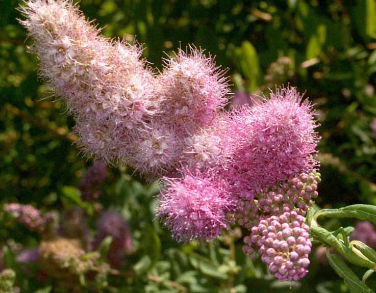
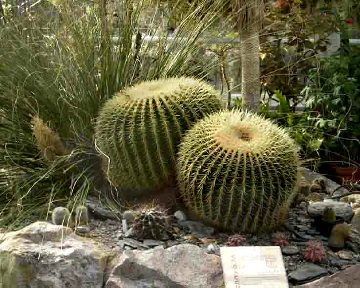

Agder naturmuseum og botaniske hage
- En omvisning sommeren 2003
Tekst: Per Arvid Åsen, førstekonservator ved Agder naturmuseum og botaniske hage
Foto: Torvald Slettebø, Universitetet i Agder, Seniorsenteret
Agder naturmuseum og botaniske hage ble grunnlagt i 1828 og er blant Norges eldste museale institusjoner. (Museet het tidligere Kristiansand Museum.) Nye, permanente utstillinger ble åpnet sommeren 1990. Gjennom moderne utstillingsteknikk blir utviklingen av Sørlandsnaturen framstilt fra istid til nåtid og fra have til høyfjell. En spesialutstilling av fargerike mineraler fra hele verden setter også preg på utstillingene, og her finnes landsdelens eneste botaniske hage.
Fra inngangspartiet til Agder naturmuseum og botaniske hage på Gimle Gård i Kristiansand. Billedkavalkaden tar deg med på en virtuell museumstur i spennende omgivelser, hvor historisk herregårdsmiljø danner en vakker ramme om besøke

Uthusbygningene på Gimle Gård. Låven til venstre huser blant annet Agder naturmuseums faste utstillinger. I bygningen i midten finnes zoologisk preparantverksted. Det karakteristiske Ridehuset er bygningen til høyre i bildet.
Fra tunet utenfor hovedinngangen til Agder naturmuseum. Museet har egen kafe som er åpen hele året. Om sommeren danner tønneplantene fra Botanisk hage en eksotisk ramme om kafebordene, og folk koser seg i sola.
Den engelske landskapsparken med parklind som kan være plantet så tidlig som i 1770-årene. I sin opprinnelige form ble parken antagelig anlagt omkring 1780-1800.
Et viktig treslag i den gamle parken er bøk. Det er vakkert når sollyset spiller i nyutsprungne blader.

Parti fra dammen i Botanisk hage. Hagen omfatter alle grøntarealene på Gimle Gård, med den gamle landskapsparken, bartresamling, naturområder, lynghage, fjellhageanlegg, staudesamling, roser og eksotiske tønneplanter.
Bartresamlingen (arboretet) ble anlagt i 1969. Samlingen er et demonstrasjonsfelt av barttrær, men danner også et sammenhengende lebelte omkring Botanisk hage.
Vanlig tuja (Thuja occidentalis "Fastigiata"), plantet ut i arboretet i 1986. I alt finnes ca. 60 forskjellige sorter bartrær i samlingen.
Apeskrekk eller skjellgran (Araucaria araucana) er en av godbitene i arboretet. Vi har to planter hvorav denne stammer fra et mortre i Bergen. Det er så vidt arten kan klare vintrene i Kristiansand, men vårt tre er nå blitt flere meter høyt.
Kristiansand lokallag av Norsk Ornitologisk Forening har et eget fuglekasseprosjekt i Gimleparken. 8 kassetyper henger i stort antall rundt i parken. Kassene kan dekke boligbehovet for 12 fuglearter.
Botanisk hage omfatter også naturområdet mellom parken og grensa til Gimlemoen. En sti er opparbeidet gjennom området.

Lynghagen er plassert i bakken ved siden av maskinhallen, bak drivhusene.
Foran utstillingsvekshuset finnes fjellhager med blant annet sukkulenter. Her en bergknapp.
Løytnantshjerte representerer en av de mange historiske prydplantene som er samlet iTusenårshagen. Planten kom trolig til Norge og Sørlandet i 1870-årene, og spredde seg raskt. Løytnantshjerte passer inn i rolige, skyggefulle miljø.
Agurkurt (Borago officinalis) er en gammel legeplante. Hele planten har vært brukt ved hoste og halssykdommer, til te og som krydder. Blomstene pynter godt opp i salater, og både blomster og blad smaker av agurk.
Toppklokke (Campanula glomerata) er en fargerik prydplante, men en god evne til å klare seg lenge på samme plass uten stell. Den sprer seg villig med rotutløpere og kan danne tette bestander, og har alt siden slutten av 1800-tallet vært kjent som forvillet i Norge.
Storstjerneskjerm (Astrantia major) i Tusenårshagen. Dette er en villig og hardfør gammel staude, men ikke så vanlig dyrket på Agder. Finnes sjelden som gjenstående eller forvillet. Vanligere på 1800-tallet, ble mye brukt den gang som en skyggetålende prydplante.

Luftløk (Allium cepa ’Viviparum’) er en gammel kulturplante som relativt sjelden finnes gjenstående i gamle hager. Lite påaktet, regnes nærmest som en kuriositet uten noe særlig aktivt bruk. Gammel grønnsak som setter småløk i toppen av stenglene.
Klasespirea (Spiraea billardii) er en av de vanligste toppspireane vi finner i Norge. Ofte vokser den i villnis i gamle hager eller forvillet i tette kratt i veiskråninger.
Høstfloks (Phlox paniculata) har vært i kultur siden 1730-årene med mange kulturformer. Vanlig staude på Agder.
Botanisk hage har en stor samling med pelargonier. Slekten Pelargonium omfatter ca. 280 arter, de fleste hjemmehørende i Sør-Afrika. Navnet kommer av Pelargos som betyr stork; fruktens form ligner på et storkenebb.
Alpestikle (Eryngium alpinum) er en vakker prydstaude med flere kultivarer.
Crinum x powelli er en praktfull lilje fra Sør-Afrika. Den dyrkes i store potter utendørs om sommeren. Overvintres frostfritt.
Praktsalvie (Salvia splendens) fra Brasil dyrkes hos oss som sommerblomst. Det finnes flere kultvarer.
Fløyelsblad (Lychnis coronaria) har vært dyrket i Europa siden middelalderen. I Norge kjent siden 1694. Finnes i dag spredt som dyrket prydplante på Sørlandet. Den sår seg villig selv, og forvilles hist og her.
Brannlilje eller safranlilje (Lilium bulbiferum) er en av de vanligste prydplantene på Agder i dag. Vanlig lokalt navn er keiserkrone. Mange sorter av liljer blir dyrket.
Sibiriris (Iris sibirica) er vanlig dyrket i hagene i Agderfylkene. Ofte kan den være gjenstående i villnis, og den forviller seg lett på veikanter etter dumping av hageavfall.

Georgine (Dahlia x hortensis). Det finnes over 20 000 registrerte kultivarer av georginer.
Georgine (Dahlia x hortensis). I Hageselskapets sortsliste fra 1998 er det nevnt 27 sorter av georginer. Georginen var i allmenn kultur i Norge etter 1860. De gamle sortene er på vei ut.
Klipperosene (Cistus) er eviggrønne busker som stammer fra Middelhavsområdet. De har store, roselignende blomster. Så vidt hardfør langs kysten. Må helst overvintres innendørs.
’Rose de Rescht’ vokser i den historiske rosehagen foran hovedbygningen på Gimle Gård. Dette er en svært gammel høst-damaskenerrose som blomstrer til langt utpå høsten.
Rosa rugosa-hybrid (rynkerose-hybrid)
Solsikker er populære planter i skolehagen
Purpursolhatt (Echinacea purpurea) kommer fra Nord-Amerika. Det er en hardfør og blomstervillig staude. Trenger en varm og solrik vokseplass.
Botanisk hage har en samling på over 40 forskjellige Fuchsia, mange store planter, nesten som små trær. ’American Bush’ er en sikker vinner blant Fuchsiavenner!?
Fuchisa formeres lett med stiklinger, og hvert år har Botanisk hage planter for salg på museets dag – som regel andre søndag i juni.
Sørlandets Fuchisavenner arrangerer treff for Fuchsiainteresserte folk i Botanisk hage
Det er ofte stor tilstrømning av publikum til temadager i Botanisk hage.
Fra Fuchsia-temadag i Botanisk hage. Her foregår det plantebytte, kjøp og salg.
Det er trivelig når bygningsmiljøet på Gimle gård fylles opp av planteinteressert publikum for utveksling av informasjon, ideer og planter.
Fra utstillingsveksthuset med sukkulente planter. Gullkulekaktus (Echinocactus grusonii) må regnes til kjempene blant de såkalte kulekaktusene, den kan bli 130 cm høy og minst 80 cm i diameter. Gullkulekaktusen har sin naturlige utbredelse i Mexico.
Agaver i utstillingsveksthuset. Sentrum for agavenes naturlige utbredelse er Mexico. Den første agaven kom til Europa i 1561. Nå har de største artene blitt naturalisert i Middelhavsområdet.
En stor stein i fjellhagen (atriet) som er hentet fra et mineralbrudd ved Moripen i Froland. Der tok de ut kvarts til Arendal Smelteverk for å lage slipestoff. På bildet ser vi lange tynne krystaller av mineralet aktinolitt (tidligere kalt strålsten) som ligger i lys kvarts.
Kvartsrik bergart fra Lom med mange små rosa korn av mineralet zoisitt, her i en variant vi kaller thulitt. Dette ble først funnet i Sauland, Telemark og oppkalt i 1820 etter Thule, et tidligere navn på det nordligste Europa. Denne rosa smykkesteinen er valgt til Norges nasjonalstein.
Ørkenroser kalles slike vakre grupper av gipskrystaller som kan graves opp av ørkensanden i Mexico og Sahara. Der er de dannet av inndampet saltholdig grunnvann nede i sanden. Steinsamlere og turister er ivrige kjøpere av disse og det har gitt levebrød til mange i nærheten.
Uruguay og Brasil (Rio Grande do Sul) er verdenskjente funnsteder for ametyst, den fiolette smykkesteinen av kvarts. Fargen kommer av langvarig stråling på jern i krystallene. Slike ametysthulrom kan være opptil 6m lange og ble dannet i en lava. Da den var avkjølt til under 100° C trengte mineralvann inn i hulrommene og dannet kalsedon (hvit) og ametyst (fiolett).
I en utstillingsmonter i andre etasje blir det vist utvalgte preparater fra museets magasin. Den premierte montasjen ”Lekende kje” er utført av Peter Valeur i 1986.
I forbindelse med Agder naturmuseums 175 år jubilieum i 2003 ble det laget en egen jubileumsutstilling, hvor objekter fra magasinet ble vist. Utstillingens navn var ”Skatter eller skrot?” Vi ser gamle preparater av vekslende kvalitet.
Museets fast utstillinger viser bl.a. utviklingen av Sørlandsnaturen etter siste istid. Rådyrmonteren representerer dagens kulturlandskap.
Moskusfeet var utbredt over hele Europa, Asia og nordligste Amerika både før og under siste istid. Monteren viser en moskusfamilie i et rekonstruert landskap fra slutten av siste mellomistid . ca. 120000 år siden.
Isbjørn i et rekonstruert kystlandskap fra 10000-11000 år siden. Vegetasjonen var lav og krypende.